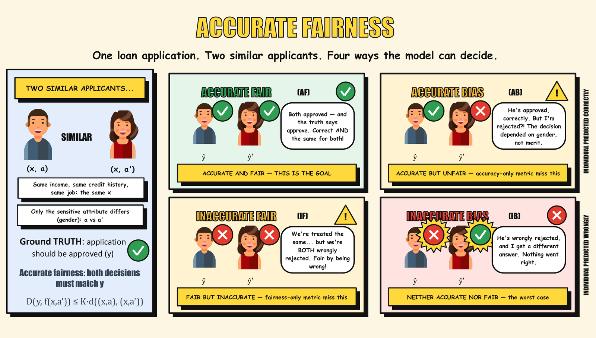
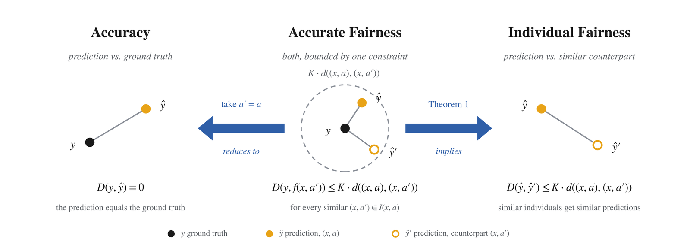
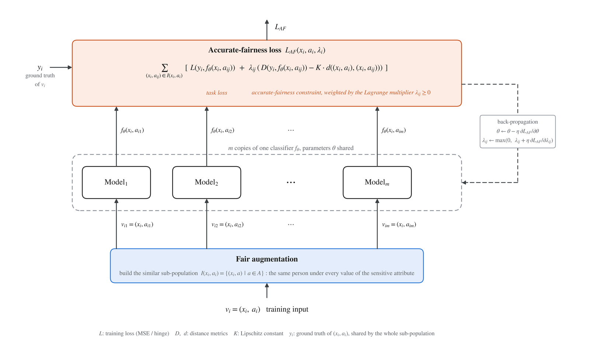
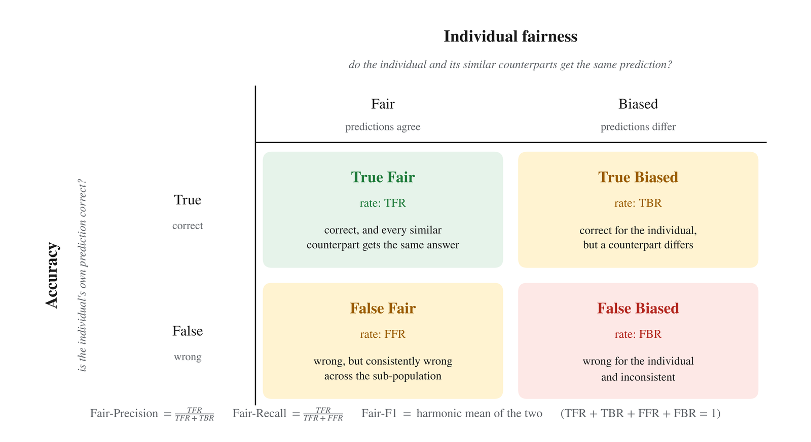
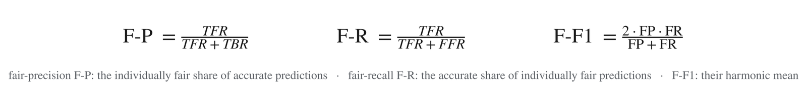
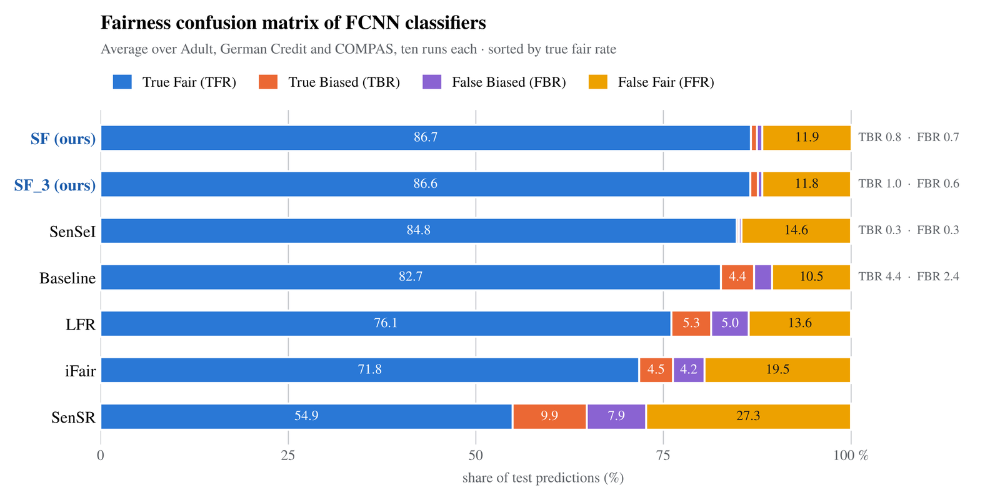

In one sentence. Accuracy and individual fairness are usually evaluated separately, so a model can be accurate but biased, or fair but wrong, without either metric noticing. Accurate fairness rules out both by asking that an individual and every similar counterpart be treated according to the individual's ground truth.
Take one loan application and two similar applicants who differ only in gender, whose application should be approved. Only the top-left case below is what we want; the other three are the ways a model can look good on one metric while failing the other.

For an input (x, a) with non-sensitive attributes x, sensitive attribute a and ground truth y, the similar sub-population I(x, a) contains every version of the same person with a different sensitive value. A classifier is accurately fair if every member's prediction stays within a Lipschitz bound of the ground truth:

Training under the accurate-fairness constraints becomes a max–min problem with one Lagrange multiplier per similar individual. A Siamese network is the natural optimiser: every member of a sub-population goes through a copy of the model with shared parameters, so the whole sub-population is treated uniformly in each back-propagation step.

Each prediction is either correct or wrong, and either consistent across the sub-population or not. The four cells give the true fair, true biased, false fair and false biased rates, and three summary metrics:



Compared with state-of-the-art individual bias mitigation, Siamese fairness improves individual fairness by 1.02–8.78 %, accuracy by 8.38–13.69 %, true fair rate by 10.09–20.57 % and fair-F1 by 5.43–10.01 % on average, and is the only method in the Fairea win-win region. On a real Ctrip service-recommendation dataset it raises the share of customers served both accurately and fairly from 34.68 % to 62.85 %.
@inproceedings{li2023accurate,
title = {Accurate Fairness: Improving Individual Fairness without Trading Accuracy},
author = {Li, Xuran and Wu, Peng and Su, Jing},
booktitle = {Proceedings of the AAAI Conference on Artificial Intelligence},
volume = {37}, number = {12}, pages = {14312--14320},
year = {2023}
}